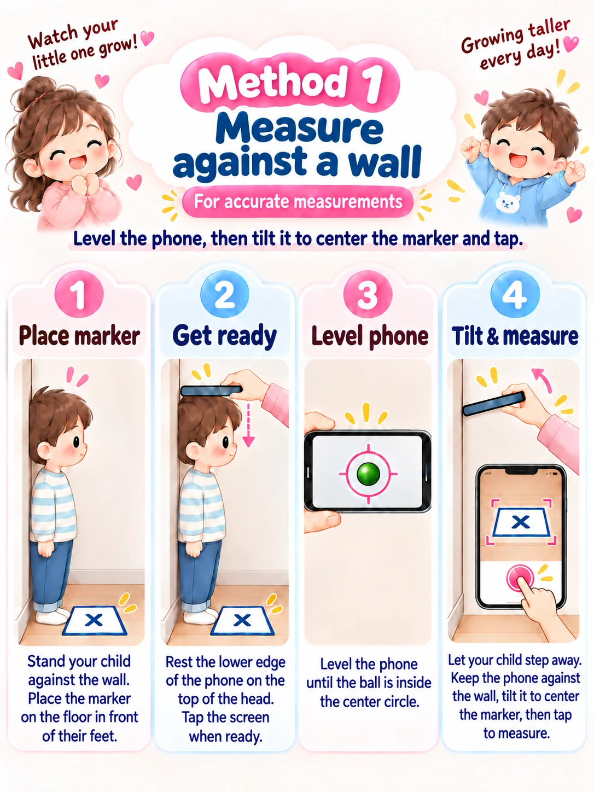
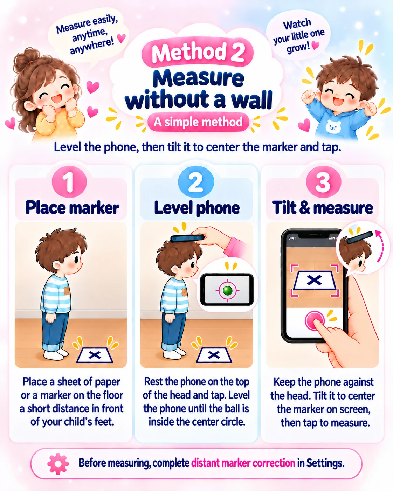

02 / MEASURE
Level the phone.
Then tilt toward the marker.
Keep the phone’s contact point on the head fixed between the two taps. Complete preparation and reference measurements first.
Complete the lens distance setting, level calibration and reference measurements. Use the same paper or marker size and position that you used during calibration.
Method 1. Measure with a helper beside a wall
Position the child and the marker
Have the child stand naturally and upright against a wall. Place the paper or marker in the calibrated position. A helper holds and operates the phone.
Rest the phone on top of the head
Place the phone’s head-contact point on the crown of the head. Avoid letting hair lift or tilt the phone.
Bring the ball inside the center circle, then tap
Level the phone and wait for movement to settle before tapping the screen.
Keep the contact point fixed, tilt and tap again
Keep the child’s posture and the phone’s contact point steady. Center the floor paper or marker in the crosshair circle, then tap again.

Method 2. Measure without a wall
A parent or caregiver holds the phone on the child’s head while the child stands upright without leaning against a wall. Place the paper or marker on the floor a short distance in front of the child’s feet. Complete distant marker correction before using this method.
Place the marker in the calibrated position
Match the distance and direction from the child’s feet to the marker. Keep the marker visible and unobstructed.
Level the phone on the head and tap the screen once
Rest the phone on the crown of the head and bring the ball inside the center circle. Tap the screen while keeping the child’s posture and the phone’s contact point steady.
Tilt toward the marker and tap the screen again
Keep the head-contact point fixed as you center the marker in the crosshair circle, then tap the screen again.

Check the result before saving
After bringing the result into the entry form, confirm the child, date, height and units, then save. If a value differs greatly from previous records, repeat the measurement under the same conditions before saving it.
- Keep the entire marker visible and avoid strong glare or shadows.
- After the level tap, do not lift the phone, lower it or take it off the head.
- Measuring at a similar time of day and in a similar posture makes records easier to compare.
- If results remain inconsistent, check the marker’s actual size, reference height range and distant marker correction.